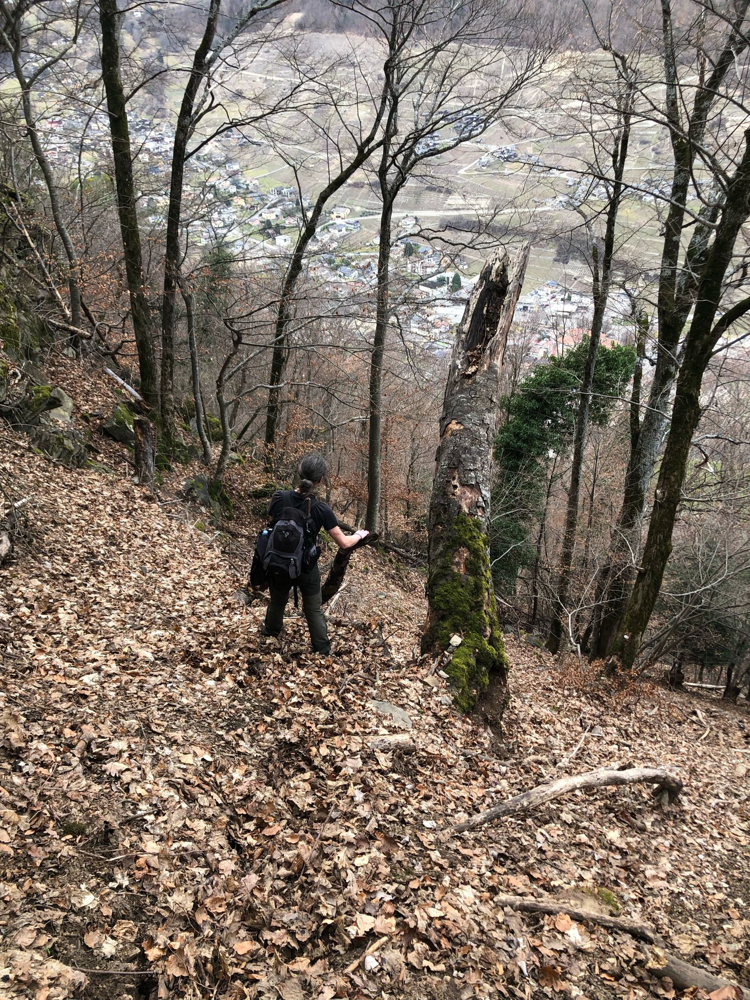
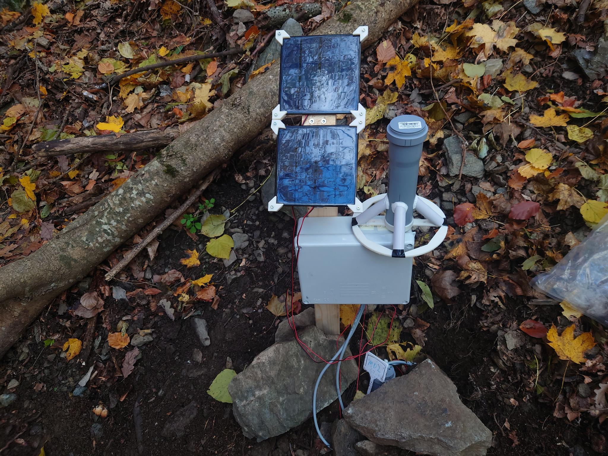
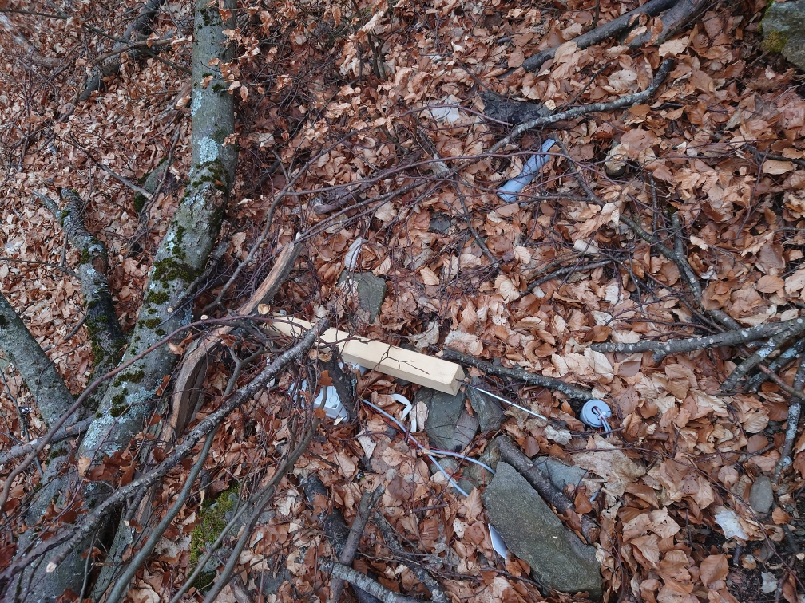
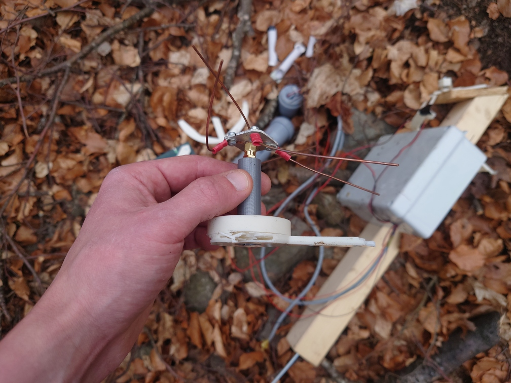
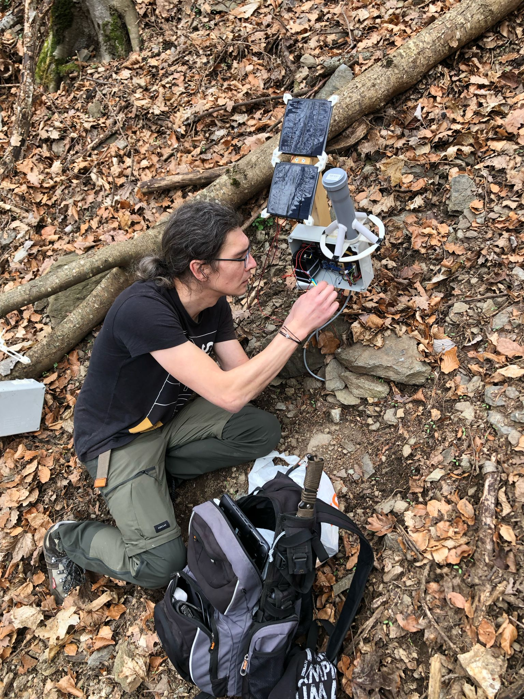

Internet of Soils
Remote measurements of soil moisture in protective forests
Impressions of our sensor installation close to Martigny

Fig. 1: A most welcoming terrain to roam around and deploy seonsors. The protective forest takes its job very seriously and also protects from a wonderful view of Martigny.

Fig. 2: A happy sensor node doing its work after installation.

Fig. 3: A less happy sensor node after eating branch that fell off the tree next to it.

Fig. 4: An antenna is also unahppy about a close meeting with a tree branch.
